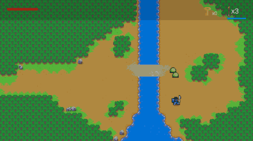
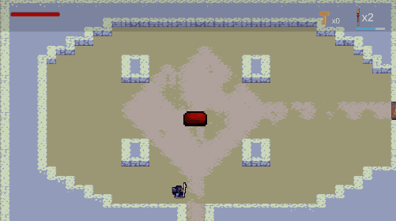
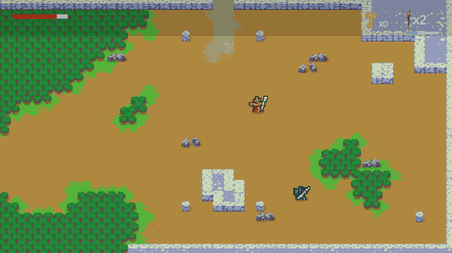
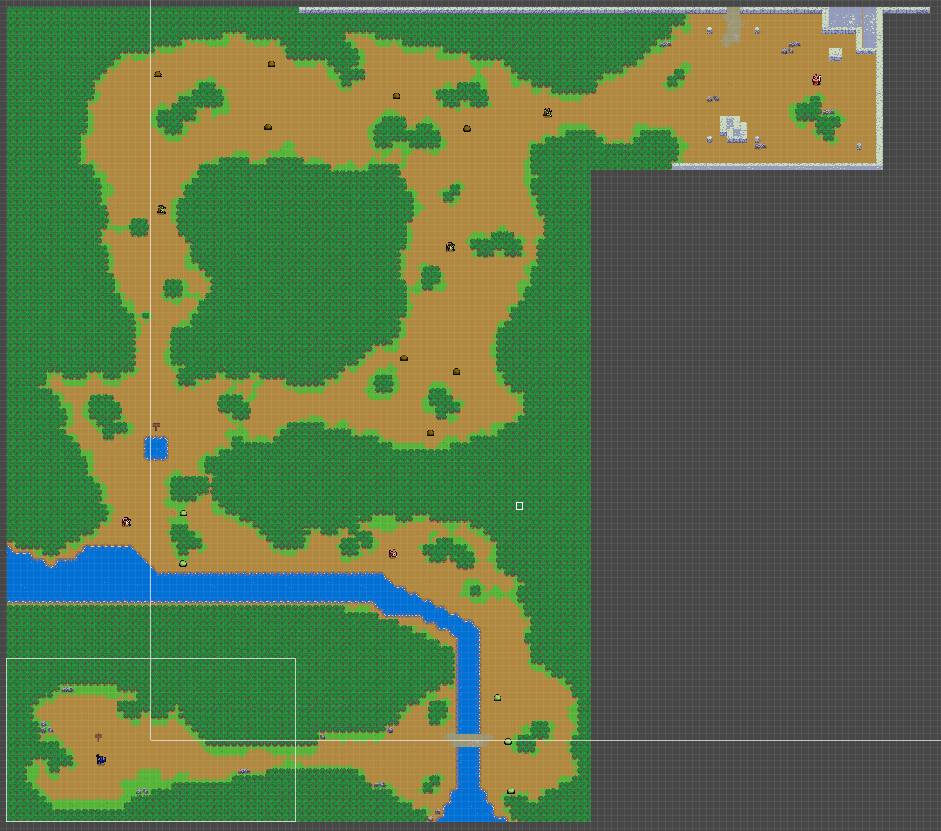

Role
Developer, Designer
Spearguy is a single player adventure game inspired by classic 2D Zelda games. It was developed for my game design class, which required me to
develop a single mechanic, then build challenges and a level for that mechanic over the course of a term.
This project was a valuable experience in regards to planning and completing a small project as a solo developer.
Developer, Designer
2023
Unity
Adventure
C#
PC
Student Project (Solo), Prototype

The primary mechanic I built was fighting with a spear, because they work as both melee and ranged weapons. The player has two attacks, and a ranged spear throw, which can be charged to throw the spear farther. While charging the spear throw, the player is locked in place, leaving them vulnerable to enemy attacks. I included this because I wanted to player to be strategic when preparing their throw, and to add a sense of tension while they wait for their attack to charge enough that it will reach the desired distance.
With the game's main mechanic being based around spear combat, I made three categories of enemies for them to fight:
The slimes are the simplest enemy in the game, simply moving toward the player and dying in a few hits. One exception is the large Red slime which will occasionally take a leap towards the player. This slime serves as a mini-boss in the dungeon portion of the game.
Archers are a more challenging enemy than the slimes. These enemies stay stationary and fire at the player from a distance, forcing the player to either dodge their arrows as they get in close, or find an opening between their shots to charge up a throw, risking getting shot in the process. There are three versions of the archer, one that fires a single arrow at a time, one that fires a single arrow at a faster rate, and one which fires three arrows in rapid succession.
Wizards are a rarer and trickier challenge for the player to face. They teleport to a random location around the player, and fire magic projectiles. The easiest Wizard fires a simple magic projectile at the player, similar to the archers. This is easily dodged, but combined with the wizards teleportation, makes it harder to hit the wizard. The second type of Wizard also fires a projectile at the player, however once it reaches the player's location, it explodes, splitting into multiple projectiles. This initial projectile moves slowly, but the explosion then splitting into multiple projectiles will catch the player off guard, adding a small twist to the encounter. Finally, the hardest version of the Wizard fires a homing projectile that follows the player around the map, disappearing after a few seconds. The projectile moves a little slower than the player, but guarantees the player won't be staying in one place for too long, leaving less opportunities for the player to get a hit on the Wizard.
To showcase the challenges and mechanics, I designed two levels with a progression of difficulty.
I started by introducing the slime and archer enemies in a linear forest section so that the player could learn how they work. Once through this forest area, the player faces off against their first Wizard enemy who is guarding the entrance to a dungeon.
The dungeon has less of a linear layout, requiring the player to locate keys and backtrack to reach the end. Throughout the dungeon the player will be introduced to the other Wizard variations, and a large red slime as mini-bosses.